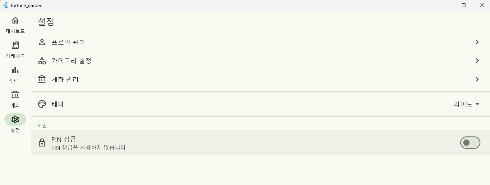
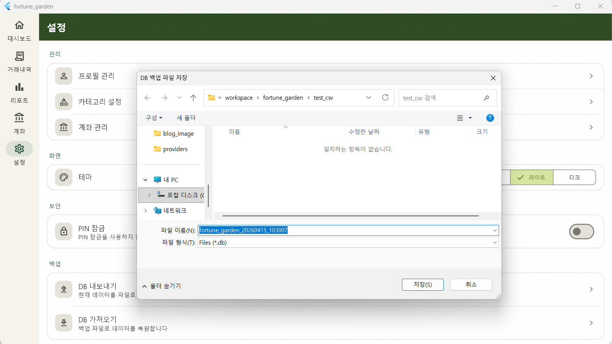
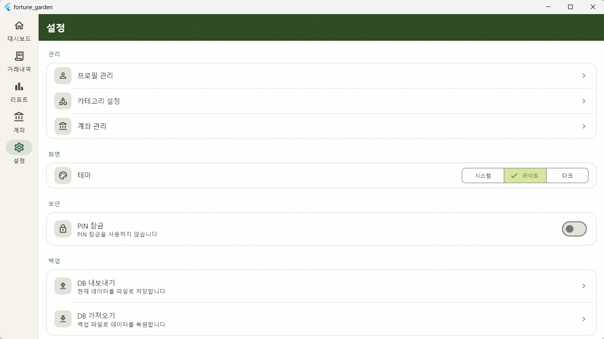

Status Check
01. 작업 전 상태 점검

기존 설정 화면은 기본적인 ListTile 나열 수준이었으며, 디자인 가이드라인 미준수 및 기능 미구현 항목이 다수 존재했습니다.
| 구분 | 점검 항목 | 상태 |
|---|---|---|
| 기능 | DB 백업/복구 섹션 (BackupSection) | ❌ 미구현 |
| 기능 | 앱 버전 및 정보 섹션 | ❌ 미구현 |
| 디자인 | GrainOverlay 및 헤더 배경색 (#2D4A22) | ❌ 미적용 |
| 디자인 | 카드 기반 섹션 그룹핑 및 테마 선택 UI | ❌ 미적용 |
Database
02. 백업 기능 설계 결정

사용자 데이터 보존을 위해
getApplicationDocumentsDirectory 내의 SQLite DB 파일을
직접 핸들링하는 방식을 채택했습니다.
2.1. 플랫폼별 내보내기 동작
-
Android: 공용 Download 폴더에
fortune_garden_timestamp.db형식으로 저장. - Windows: FilePicker를 호출하여 사용자가 직접 저장 경로와 파일명을 지정.
-
가져오기 프로세스: 파일 선택 → 기존 DB 자동
백업(
.bak생성) → 파일 교체 → 앱 종료(exit) 안내.
// DB 파일 교체 후 안전한 재시작을 위한 종료 프로세스 void _onImportComplete() { showDialog( context: context, builder: (ctx) => AlertDialog( title: const Text('가져오기 완료'), content: const Text('설정을 반영하기 위해 앱을 종료합니다. 다시 실행해 주세요.'), actions: [ TextButton(onPressed: () => exit(0), child: const Text('종료')), ], ), ); }
UI/UX Layout
03. 디자인 시스템 적용

전체 구조를 CustomScrollView로 변경하고, 설정 항목들을
성격에 따라 카드로 그룹화하여 가독성을 높였습니다.
- 헤더 스타일: SliverAppBar에 다크 그린 배경(#2D4A22)과 Newsreader 세리프 타이틀 적용.
-
섹션 그룹핑:
_SettingsCard위젯을 정의하여 모서리 반경 16, 외곽선 처리를 통해 시각적 밀도 최적화. -
컴포넌트 교체: 테마 선택 방식을 Dropdown에서
SegmentedButton으로 변경하여 직관성 강화.
Component List
04. 주요 컴포넌트 명세
| 위젯명 | 용도 |
|---|---|
_SectionLabel |
Primary 색상이 적용된 섹션 타이틀 헤더 |
_SettingsCard |
설정 항목들을 감싸는 카드형 컨테이너 |
_NavTile |
화면 이동을 위한 우측 체브론 포함 타일 |
_PinToggleTile |
보안 설정을 위한 스위치 및 PIN 관리 인터페이스 |
Next Step
05. 미해결 사항 및 후속 작업
-
Android 권한: Scoped Storage 대응을 위한
permission_handler연동 및 다운로드 폴더 쓰기 권한 요청 로직 추가 예정. -
버전 표시: 현재 v1.0.0 하드코딩 상태이며,
package_info_plus를 통한 동적 버전 로드 전환 필요. - 다음 작업: [ ] SCR-001 초기 설정 및 프로필 생성 프로세스 개발.
Comments